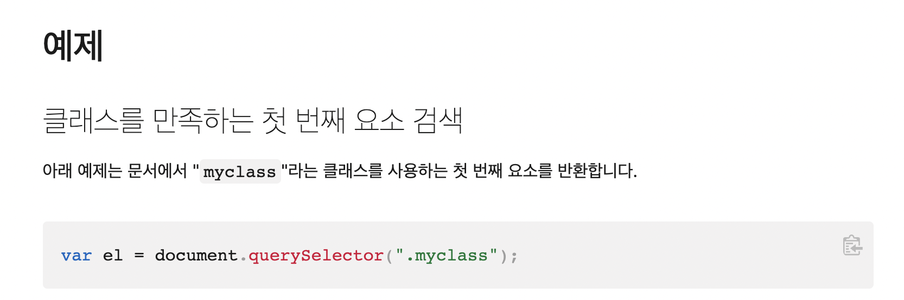

서울뉴딜형 일자리 사업 중 인공지능 개발자 양성 및 취업과정에 관심이 갔다.
아티칸쉬람의 꿈을 포기하지 못하고 그저 가만히 앉아 내면을 들여다보며, 동요하는 마음을 고요하게 하는 것에만 집중하던 차에 '어쩌면 저 과정을 통해서 아티칸쉬람을 현실로 만들어갈 수 있지 않을까.' 하는 작은 소망을 갖게 되었다.
마음은 끊임없이 요동쳤다. 유치한 꿈에 불과한 일을 진짜로 도전하려고 한다는 것은 너무 어리석은 일이라며, 내가 너무나 부족하고, 나약하고, 아무것도 모르는 사람이라는 것을 증명하는 생각들이 새어나왔다.
전화문의를 했을 때에는 초보가 듣기에는 어려운 수업이므로, 그래도 무료강의라도 한 번 들어보시라는 조언을 들었다. 한국인공지능협회에 들어가니 배우기 좋은 추천사이트 목록이 있었다. 생활코딩이라는 너무 괜찮은 무료코딩 강의 사이트를 발견했다.
6.28. WEB1 html 강의를 들으며 꽤 쉽게 첫 웹페이지를 만들 수 있게 되었다. 아티칸쉬람에 적고 싶은 이야기들을 작성하다보니 점점 불안과 두려움이 약간의 열정으로 변환되는 것을 느낄 수 있었다.
7. 2. WEB2 CSS 강의를 들으니 얼추 보기에 그럴싸한 웹페이지를 만들었다. 여전히 마음 안에서는 이런 무의미한 일은 그만두는 게 좋지 않겠느냐는 생각이 일어났다. 하지만 점점 페이지를 완성하고 어떤 서비스를 사람들에게 제공하고 싶은지, 어떤 사람들에게 알려주고 싶은지가 명확해지기 시작했다.
7. 3. WEB2 JAVASCRIPT 강의를 듣기 시작했다. 이번에는 강의 내용을 노트에 정리하는 대신 웹페이지에 내용을 정리하는 게 좋을 것 같다는 생각이 들었다. 이번 강의는 바로 예제 페이지에 적용하기 보다는 우선 자바스크립트의 여러 기능들을 익히고, 나중에 아티칸쉬람 페이지에 필요한 기능을 적용하는 것이 나을 것 같다고 판단했기
때문이다.
2개월 간 아티칸쉬람 사이트에 12주간의 커리큘럼을 넣을 예정이다. 2개월 후에는 어떤 미래가 기다리고 있을까?
알 수 없지만, 지금 내가 알고 있는 것은 기회는 주어지는 것이 아니라 만들어가는 것이라는 점이다.
수업내용
사용자와 상호작용하는 동적인 웹페이지를 만들고 싶다는 욕망에서 자바스크립트가 등장하였다.
제2강 수업의 목적
수업내용
자바스크립트가 html에서 어떻게 활용되는지 이해하기
night 버튼을 클릭하면 배경색이 블랙이 되고, 텍스트가 화이트로, day 버튼을 클릭하면 배경색이 화이트, 텍스트가 블랙이 되도록 페이지를 구성할 때 자바스크립트라는 언어가 사용됨.
제3강:Html과 JS의 만남
수업내용
자바스크립트 태그가 사용되는 경우 일반 html 태그를 사용하는 것과 어떤 차이점이 있는지 이해하기
html 문서에서 자바스크립트 사용법
(스크립트 태그를 사용하여 작성한 'hello world')
1. 본문 안에서 스크립트<"script"> 태그를 사용한다.
: document.write('문자')_'문자'를 자바스크립트로 구현해 주세요.
2. 일반 html 문서와의 차이점
(스크립트 태그를 사용하여 작성한 '1+1')
문자가 들어가야 할 자리에 1+1을 넣으면, 문자 그대로 산출되는 것이 아니라 합산한 '2'가 산출됨.
문제점 : 'hello world'에서 '1+1'로 바꾸었으나 합계가 산출되지 않음.
|문제해결
hello world 라는 문자를 넣을 때에는 괄호 안에 ('hello world') 작은 따옴표를 넣어야 하고,
숫자를 넣을 때에는 작은 따옴표 없이 (1+1)을 넣어야 합계가 산출됨.
제4강:HTML과 JS의 만남_이벤트
수업내용
1.[onclick] 버튼을 생성하고, 버튼을 누르면 경고창이 뜨도록 만들기
(예제)
- input type="button" : 버튼을 생성하는 명령어
- value="~" : 버튼 안에 들어가는 내용(~)
-> 여기까지는 html 언어임
- onclick="alert(~)" : 클릭하면 내용(~)이 경고(alert)창으로 뜬다.
*html 설명성에 따르면 'onclick'이란 속성은 반드시 속성값으로 자바스크립트를 써야하며, onclik 속성이 들어 있는 태그에 해당 동작을 실행.
2.이벤트란?
웹브라우저 안에서 일어나는 동작들을 말함.
3.[onchange] 내용이 바뀌면, 경고창이 뜨도록 만들기
(예제)
- input type="text" : 문자입력창을 생성하는 명령어
- onchange="alert(~)": 문자입력창에 문자가 입력되면, 이런 내용(~)의 경고창을 보낼 것.
4.주요이벤트
주요검색어 예제 : javaScript keydown event attribute
onchange(내용이 바뀔 때), onclick(클릭할 때), onkeydown(키보드를 누를 때) 등등 10-20가지 정도 주요 이벤트들이 있으니 찾아보도록
이해가 잘 가지 않음.
이해하고 싶지 않은 것일수도...;;;
결론적으로 어떤 웹페이지에서 [검사-콘솔]를 이용하면, 내게 필요한 조건을 설정하여 일의 양을 줄이고, 파일을 생성하지 않고도 쉽게 결과값을 얻어낼 수 있다는 뜻으로 보임. Tip! [검사-엘리먼트]를 클릭하면, 현재 페이지의 소스가 나오고, 'esc'키를 누르면 콘솔창이 자동으로 밑에 생성되고, '위쪽 화살표'키를 누르면 현재 작성한 코드를 다시 한번 실행할 수 있음.
제6강:데이터타입-문자열과 숫자
수업내용
1.자바스크립트에서 숫자와 문자를 사용하는 법
자바스크립트에는 6가지 데이터타입과 객체라는 개념이 존재함.
6가지 데이터타입 중 숫자와 문자열에 대해 이해하는 시간임.
역시 콘솔을 이용합니다.
2.숫자 입력하기
[검사-콘솔] 숫자는 그냥 숫자와 사칙연산을 이용하면 결과값이 나옵니다.
cf)위에 'alert(1+1);'를 입력하면, 사칙연산 값인 '2'가 팝업창으로 나옴.
3.문자 입력하기
문자는 큰따옴표나 작은따옴표를 이용하여 입력합니다.
4.문자 사용법
- 'hello world'.
length
를 입력하면, 즉, 앞에 내가 알기 원하는 문자를 적고, '.length'라고 명령어를 입력하면 앞에 문자열의 개수를 알려줌.
- 'hello world'
.toUpperCase()
라고 입력하면, 문자열이 모두 대문자로 표시됨.
- 'hello world'
.indexOf('world')
라고 입력하면 문자열의 몇 번째에서 월드라는 단어가 시작되는지 순서를 알려줌.
-' hello world '
.trim()
을 입력하면, 공백이 사라짐(결과 값:"hello world").
5.여러가지 문자 사용례를 알고 싶을 때
문자를 사용하면서 다양한 정보를 얻어내고 싶다면 'JavaScript string'을 검색하면 됨.
위와 같이, 'name'이란 변수를 'ralikha'로 지정하고, 콤마 입력 후,'쉬프트+엔터'(엔터를 바로 실행하지 않는다는 뜻)를 입력한 후 함수를 사용하기 원하는 문자열을 ""큰 따옴표로 나누고 +name+ 으로 이어주면, name이 있던 자리가 ralikh로 변환된다.
*name 앞에 var을 입력할 것.(예시)var name = 'ralikha';
제8강:웹브라우저 제어
수업내용
지금까지 배운 자바스크립트의 문법 기초와 CSS를 활용하여, 어떻게 웹브라우저에서 구현할지 알아나갈 것임.
제9강:CSS 기초(style 속성)
수업내용
style 태그를 사용하면, CSS문법을 활용할 수 있음. 꾸미기 원하는 내용의 태그 옆에 style을 활용하여 배경색, 글씨색 등을 변경할 수 있음.
예시로 제8강의 제목을 배경색과 글씨색, 높이 등을 지정했음. 글씨색은 별도의 명령어가 없더라도, 원하는 색을 지정하면 글씨색이 반영됨.
제10강:CSS 기초(sytle 태그)
수업내용
클래스를 이용해 여러 중복되는 항목을 하나로 묶기
어떤 문장이나 문단이 주제어라든지 정보적으로 강조할만한 의미가 없는 상태에서 태그를 지정하여 꾸미고 싶을 때 사용하는 무색무취의 태그가 'div'와'span'임.
div로 태그를 지정할 때에는 줄바꿈이 되고, span으로 태그를 지정할 땐 줄바꿈이 되지 않음.
위 예시에서 문단 내에 있는 'javaScript'라는 단어에 전체를 굵은 글씨체로 하고 싶을 때, 무색무취의 span의 태그를 사용하여 class로 묶어줄 수 있음.
'js'라는 클래스로 javaScript라는 단어를 묶은 다음, 스타일 태그를 이용하여, 전체 클래스의 모양을 지정할 수 있는데, 클래스를 지정할 때 모든 단어에 클래스를 지정해야 하지만, 굳이 클래스로 묶는 이유는 클래스로 묶어두면, 나중에 색을 변경하거나 모양을 변경할 때에는 스타일 태그에 있는 '.js'부분만 수정하면, 모두 수정가능하기 때문임.
클래스로 묶은 다음 스타일 태그에 지정할 때에는 '.'을 잊지말 것. '.이 없는 경우' 본문 전체의 JS태그를 의미하고, '.'이 있는 경우 클래스로 지정된 JS태그를 의미함.
span이 가장 포괄적이고, class는 그룹핑을 하므로 조금 더 구체적이고, id는 하나에만 쓸 수 있으므로, 특정한 것임.
그러므로, id가 킹왕짱이고, class, span 순으로 적용됨.
CSS 선택자의 종류 : id, class, tag
제12강:제어할 태그 선택하기
수업내용
|배운 내용을 토대로 제2강에서 표현한 페이지 만들어보기
1.버튼 만들기
(예제)
- input 태그를 선택하면, 자동으로 type, name, value가 생성됨. 아직 name은 배우지 않았으므로, 삭제하고, 내용은 '푸른 밤, 붉은 낮'인 버튼을 만든다면,
input type="button" value="푸른 밤/붉은 낮"
을 태그로 감싸면 됨.
2-1.버튼을 클릭했을 때 변화되길 원하는 영역 지정하기
- 내가 원하는 효과를 나타내기 위해 어떤 자바스크립트 코드를 써야할지 알지 못하므로, 설명서를 검색함.
(검색 예)javaScript select tag by css selector 자바스크립트 셀렉터 설명서 검색 결과

예제를 참고하여, 코드를 작성함. 뜻은 '이 문서 안에 있는 "마이클래스"라는 선택자들을 선택합니다.'라는 뜻이고, 괄호 안에 내용을 내가 원하는 선택자로 바꿔주면 됨.
우리는 본문 전체의 색상을 바꾸기 원하므로, 'body'로 작성함.
만약 id태그로 지정한 내용을 바꾸기 원한다면, '#id'로 작성하면 됨.
즉, 태그 선택자는 앞에 아무것도 붙이지 않고, 클래스 선택자는 '.'을 붙이고, id 선택자는 '#'을 붙임.